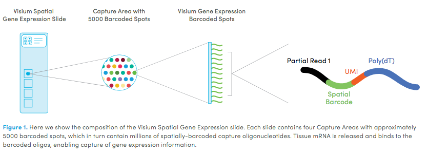

10X Visium brain dataset
The Visium brain data to run this tutorial can be found here
Giotto global instructions
library(Giotto)
## create instructions
## instructions allow us to automatically save all plots into a chosen results folder
## Here we will not automatically save plots, for an example see the visium kidney dataset
## We will only set the python path which is needed for certain analyses
my_python_path = "/your/python/path/python"
results_folder = '/your/results/path/'
instrs = createGiottoInstructions(python_path = my_python_path)
part 1: Data input
10X genomics recently launched a new platform to obtain spatial expression data using a Visium Spatial Gene Expression slide.

## expression and cell location
## expression data
data_dir = "path/to/Visum_data/"
data_path = paste0(data_dir,'raw_feature_bc_matrix/')
raw_matrix = get10Xmatrix(path_to_data = data_path, gene_column_index = 2) # gene symbol is in the 2nd column
## spatial locations and metadata
spatial_locations = fread(paste0(data_dir,'spatial/tissue_positions_list.csv'))
spatial_locations = spatial_locations[match(colnames(raw_matrix), V1)]
colnames(spatial_locations) = c('barcode', 'in_tissue', 'array_row', 'array_col', 'col_pxl', 'row_pxl')
High resolution png from original tissue.

part 2: Create Giotto object & process data
## create
## we need to reverse the column pixel column (col_pxl) to get the same .jpg image as provided by 10X
visium_brain <- createGiottoObject(raw_exprs = raw_matrix,
spatial_locs = spatial_locations[,.(row_pxl,-col_pxl)],
instructions = instrs,
cell_metadata = spatial_locations[,.(in_tissue, array_row, array_col)])
## check metadata
pDataDT(visium_brain)
## compare in tissue with provided jpg
spatPlot(gobject = visium_brain, point_size = 2,
cell_color = 'in_tissue', cell_color_code = c('0' = 'lightgrey', '1' = 'blue'))
Spots labeled according to whether they were covered by tissue or not:
## subset on spots that were covered by brain tissue
metadata = pDataDT(visium_brain)
in_tissue_barcodes = metadata[in_tissue == 1]$cell_ID
visium_brain = subsetGiotto(visium_brain, cell_ids = in_tissue_barcodes)
## filter genes and cells
visium_brain <- filterGiotto(gobject = visium_brain,
expression_threshold = 1,
gene_det_in_min_cells = 50,
min_det_genes_per_cell = 1000,
expression_values = c('raw'),
verbose = T)
## normalize
visium_brain <- normalizeGiotto(gobject = visium_brain, scalefactor = 6000, verbose = T)
## add gene & cell statistics
visium_brain <- addStatistics(gobject = visium_brain)
## visualize
# location of spots
spatPlot(gobject = visium_brain, point_size = 2)
Spots after subsetting and filtering:
# number of genes per spot
spatPlot(gobject = visium_brain, cell_color = 'nr_genes', color_as_factor = F, point_size = 2)
Overlay with number of genes detected per spot:
part 3: dimension reduction
## highly variable genes (HVG)
visium_brain <- calculateHVG(gobject = visium_brain)
highly variable genes:
## select genes based on HVG and gene statistics, both found in gene metadata
gene_metadata = fDataDT(visium_brain)
featgenes = gene_metadata[hvg == 'yes' & perc_cells > 3 & mean_expr_det > 0.4]$gene_ID
## run PCA on expression values (default)
visium_brain <- runPCA(gobject = visium_brain, genes_to_use = featgenes, scale_unit = F)
# significant PCs
signPCA(visium_brain, genes_to_use = featgenes, scale_unit = F)
screeplot to determine number of Principal Components to keep:
# plot PCA
plotPCA(gobject = visium_brain)
PCA:
## run UMAP
visium_brain <- runUMAP(visium_brain, dimensions_to_use = 1:10)
plotUMAP(gobject = visium_brain)
UMAP:
## run tSNE
visium_brain <- runtSNE(visium_brain, dimensions_to_use = 1:10)
plotTSNE(gobject = visium_brain)
tSNE:
part 4: cluster
## sNN network (default)
visium_brain <- createNearestNetwork(gobject = visium_brain, dimensions_to_use = 1:10, k = 15)
## Leiden clustering
visium_brain <- doLeidenCluster(gobject = visium_brain, resolution = 0.4, n_iterations = 1000)
# default cluster result name from doLeidenCluster = 'leiden_clus'
plotUMAP(gobject = visium_brain, cell_color = 'leiden_clus', show_NN_network = T, point_size = 2)
Leiden clustering:

part 5: co-visualize
# leiden clustering results
spatDimPlot(gobject = visium_brain, cell_color = 'leiden_clus',
dim_point_size = 1.5, spat_point_size = 1.5)
Co-visualzation:
# number of genes detected per spot
spatDimPlot(gobject = visium_brain, cell_color = 'nr_genes', color_as_factor = F,
dim_point_size = 1.5, spat_point_size = 1.5)
Co-visualzation overlaid with number of genes detected:
# zoom-in on Dentate Gyrus by subsetting giotto object based on spatial coordinates/locations
DG_subset = subsetGiottoLocs(visium_brain, x_max = 6500, x_min = 3000, y_max = -2500, y_min = -5500, return_gobject = T)
spatDimPlot(gobject = DG_subset, cell_color = 'leiden_clus', spat_point_size = 5)
Zoom-in on Dentate Gyrus:
part 6: cell type marker gene detection
Gini marker genes
## gini ##
## ---- ##
gini_markers_subclusters = findMarkers_one_vs_all(gobject = visium_brain,
method = 'gini',
expression_values = 'normalized',
cluster_column = 'leiden_clus',
min_genes = 20,
min_expr_gini_score = 0.5,
min_det_gini_score = 0.5)
# violinplot
topgenes_gini = gini_markers_subclusters[, head(.SD, 1), by = 'cluster']$genes
violinPlot(visium_brain, genes = unique(topgenes_gini), cluster_column = 'leiden_clus',
strip_text = 8, strip_position = 'right')
Gini:
# cluster heatmap
topgenes_gini = gini_markers_subclusters[, head(.SD, 2), by = 'cluster']$genes
my_cluster_order = c(5, 13, 7, 2, 1, 10, 14, 6, 12, 9, 3, 4 , 8, 11, 15)
plotMetaDataHeatmap(visium_brain, selected_genes = topgenes_gini, custom_cluster_order = my_cluster_order,
metadata_cols = c('leiden_clus'), x_text_size = 10, y_text_size = 10)
# umap plots
dimGenePlot2D(visium_brain, expression_values = 'scaled',
genes = gini_markers_subclusters[, head(.SD, 1), by = 'cluster']$genes,
cow_n_col = 3, point_size = 1,
genes_high_color = 'red', genes_mid_color = 'white', genes_low_color = 'darkblue', midpoint = 0)
Scran marker genes
scran_markers_subclusters = findMarkers_one_vs_all(gobject = visium_brain,
method = 'scran',
expression_values = 'normalized',
cluster_column = 'leiden_clus')
# violinplot
topgenes_scran = scran_markers_subclusters[, head(.SD, 1), by = 'cluster']$genes
violinPlot(visium_brain, genes = unique(topgenes_scran), cluster_column = 'leiden_clus',
strip_text = 8, strip_position = 'right')
Scran:
# cluster heatmap
topgenes_scran = scran_markers_subclusters[, head(.SD, 2), by = 'cluster']$genes
plotMetaDataHeatmap(visium_brain, selected_genes = topgenes_scran, custom_cluster_order = my_cluster_order,
metadata_cols = c('leiden_clus'))
# umap plots
dimGenePlot2D(visium_brain, expression_values = 'scaled',
genes = scran_markers_subclusters[, head(.SD, 1), by = 'cluster']$genes,
cow_n_col = 3, point_size = 1,
genes_high_color = 'red', genes_mid_color = 'white', genes_low_color = 'darkblue', midpoint = 0)
part 7: cell-type annotation
Visium spatial transcriptomics does not provide single-cell resolution, making cell type annotation a harder problem. Giotto provides 3 ways to calculate enrichment of specific cell-type signature gene list:
- PAGE
- rank
- hypergeometric test
To generate the cell-type specific gene lists for the mouse brain data we used cell-type specific gene sets as identified in Zeisel, A. et al. Molecular Architecture of the Mouse Nervous System
# known markers for different mouse brain cell types:
# Zeisel, A. et al. Molecular Architecture of the Mouse Nervous System. Cell 174, 999-1014.e22 (2018).
## cell type signatures ##
## combination of all marker genes identified in Zeisel et al
brain_sc_markers = fread('/path/to/Visium_data/Brain_data/sig_matrix.txt') # file don't exist in data folder
sig_matrix = as.matrix(brain_sc_markers[,-1]); rownames(sig_matrix) = brain_sc_markers$Event
## enrichment tests
visium_brain = createSpatialEnrich(visium_brain, sign_matrix = sig_matrix, enrich_method = 'PAGE') #default = 'PAGE'
## heatmap of enrichment versus annotation (e.g. clustering result)
cell_types = colnames(sig_matrix)
plotMetaDataCellsHeatmap(gobject = visium_brain,
metadata_cols = 'leiden_clus',
value_cols = cell_types,
spat_enr_names = 'PAGE',x_text_size = 8, y_text_size = 8)
## spatial enrichment results for all cell type signatures ##
cell_types_subset = colnames(sig_matrix)[1:10]
spatCellPlot(gobject = visium_brain, spat_enr_names = 'PAGE',
cell_annotation_values = cell_types_subset,
cow_n_col = 4,coord_fix_ratio = NULL, point_size = 0.75)
cell_types_subset = colnames(sig_matrix)[11:20]
spatCellPlot(gobject = visium_brain, spat_enr_names = 'PAGE',
cell_annotation_values = cell_types_subset,
cow_n_col = 4,coord_fix_ratio = NULL, point_size = 0.75)
## spatial and dimension reduction visualization with
spatDimCellPlot(gobject = visium_brain, spat_enr_names = 'PAGE',
cell_annotation_values = c('Cortex_hippocampus', 'Granule_neurons', 'di_mesencephalon_1', 'Oligo_dendrocyte','Vascular'),
cow_n_col = 1, spat_point_size = 1, plot_alignment = 'horizontal')
Co-visualization for selected subset:
## visualize individual spatial enrichments
spatDimPlot(gobject = visium_brain,
spat_enr_names = 'PAGE',
cell_color = 'Cortex_hippocampus', color_as_factor = F,
spat_show_legend = T, dim_show_legend = T,
gradient_midpoint = 0,
dim_point_size = 1.5, spat_point_size = 1.5)
spatDimPlot(gobject = visium_brain,
spat_enr_names = 'PAGE',
cell_color = 'Granule_neurons', color_as_factor = F,
spat_show_legend = T, dim_show_legend = T,
gradient_midpoint = 0,
dim_point_size = 1.5, spat_point_size = 1.5
part 8: spatial grid
# create spatial grid
visium_brain <- createSpatialGrid(gobject = visium_brain,
sdimx_stepsize = 400,
sdimy_stepsize = 400,
minimum_padding = 0)
spatPlot(visium_brain, cell_color = 'leiden_clus', show_grid = T,
grid_color = 'red', spatial_grid_name = 'spatial_grid')
part 9: spatial network
# create spatial network
visium_brain <- createSpatialNetwork(gobject = visium_brain, method = 'kNN', k = 5, maximum_distance_knn = 400, name = 'spatial_network')
spatPlot(gobject = visium_brain, show_network = T, point_size = 1,
network_color = 'blue', spatial_network_name = 'spatial_network')
part 10: spatial genes
## kmeans binarization
kmtest = binSpect(visium_brain, calc_hub = T, hub_min_int = 5,
spatial_network_name = 'spatial_network')
spatGenePlot(visium_brain, expression_values = 'scaled',
genes = kmtest$genes[1:6], cow_n_col = 2, point_size = 1,
genes_high_color = 'red', genes_mid_color = 'white', genes_low_color = 'darkblue', midpoint = 0)
## rank binarization
ranktest = binSpect(visium_brain, bin_method = 'rank', calc_hub = T, hub_min_int = 5,
spatial_network_name = 'spatial_network')
spatGenePlot(visium_brain, expression_values = 'scaled',
genes = ranktest$genes[1:6], cow_n_col = 2, point_size = 1,
genes_high_color = 'red', genes_mid_color = 'white', genes_low_color = 'darkblue', midpoint = 0)
## silhouette
spatial_genes = silhouetteRank(gobject = visium_brain,
expression_values = 'scaled',
rbp_p=0.95, examine_top=0.3)
spatGenePlot(visium_brain, expression_values = 'scaled',
genes = spatial_genes$genes[1:6], cow_n_col = 2, point_size = 1,
genes_high_color = 'red', genes_mid_color = 'white', genes_low_color = 'darkblue', midpoint = 0)
part 11: HMRF domains
# spatial genes
my_spatial_genes <- spatial_genes[1:100]$genes
# do HMRF with different betas
hmrf_folder = paste0(results_folder,'/','11_HMRF/')
if(!file.exists(hmrf_folder)) dir.create(hmrf_folder, recursive = T)
HMRF_spatial_genes = doHMRF(gobject = visium_brain, expression_values = 'scaled',
spatial_genes = my_spatial_genes,
k = 12,
betas = c(0, 0.5, 6),
output_folder = paste0(hmrf_folder, '/', 'Spatial_genes/SG_topgenes_k12_scaled'))
## view results of HMRF
for(i in seq(0, 3, by = 0.5)) {
viewHMRFresults2D(gobject = visium_brain,
HMRFoutput = HMRF_spatial_genes,
k = 12, betas_to_view = i,
point_size = 2)
}
## alternative way to add all HMRF results
#results = writeHMRFresults(gobject = ST_test,
# HMRFoutput = HMRF_spatial_genes,
# k = 12, betas_to_view = seq(0, 3, by = 0.5))
#ST_test = addCellMetadata(ST_test, new_metadata = results, by_column = T, column_cell_ID = 'cell_ID')
## add HMRF of interest to giotto object
visium_brain = addHMRF(gobject = visium_brain,
HMRFoutput = HMRF_spatial_genes,
k = 12, betas_to_add = c(0, 0.5),
hmrf_name = 'HMRF')
# b = 0.5
spatPlot(gobject = visium_brain, cell_color = 'HMRF_k12_b.0.5', point_size = 2)
Export and create Giotto Viewer
1. Export Giotto results to a specificied directory
- export spot/cell annotations
- export dimension reduction coordinates (umap, tsne, …)
- export expression data
This function will create a directory that, together with the 10X provided .tiff file,
can be used to create an interactive Giotto Viewer
# select annotations, reductions and expression values to view in Giotto Viewer
viewer_folder = paste0(results_folder, '/', 'mouse_visium_brain_viewer')
exportGiottoViewer(gobject = visium_brain,
output_directory = viewer_folder,
spat_enr_names = 'PAGE',
factor_annotations = c('in_tissue',
'leiden_clus',
'HMRF_k12_b.1'),
numeric_annotations = c('nr_genes',
'Granule_neurons'),
dim_reductions = c('tsne', 'umap'),
dim_reduction_names = c('tsne', 'umap'),
expression_values = 'scaled',
expression_rounding = 2,
overwrite_dir = T)